Gestión de Firma Electrónica

Módulo de firma electrónica
Este módulo permite realizar tareas de gestión de firma electrónica, tales como el manejo de certificados electrónicos, la firma de documentos PDF y la verificación de firma en documentos PDF. El módulo de Firma Electrónica está integrado por dos secciones: Gestión de Certificado y Acciones Comunes.
- Para entrar en el módulo de Firma Electrónica, ubicarse en el Panel de Lateral de KAVAC, presionar el botón Firma Electrónica y luego en Gestión y firmado.
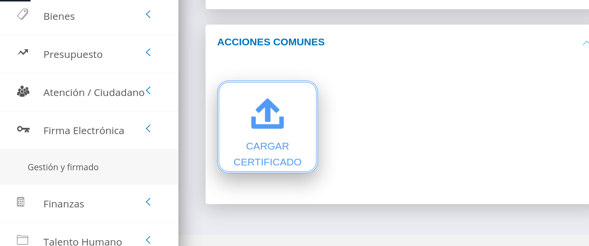
Gestión de certificado
Esta sección contiene las opciones que permiten Cargar, Actualizar, Eliminar y Ver información sobre los certificados .p12 cargados en el sistema.
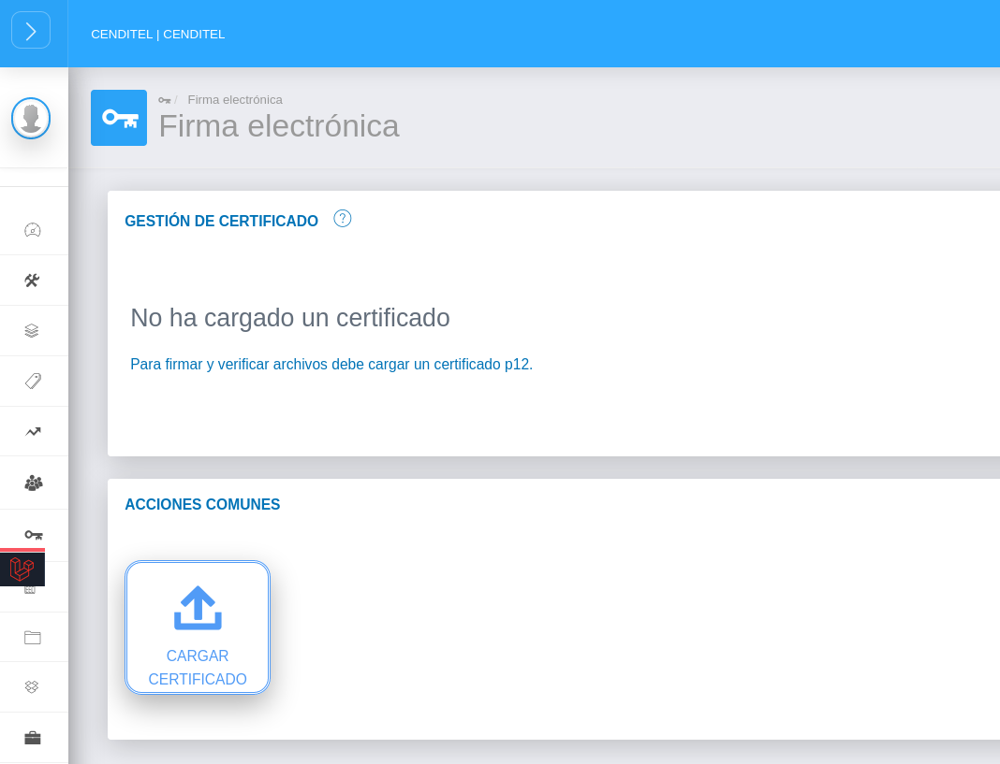
Cargar certificado
- Presionar el botón Cargar Certificado ubicado en la sección Acciones Comunes.
- Presionar Examinar y buscar el certificado .p12 en el equipo.
- Escribir la contraseña del certificado .p12.
- Presionar Guardar .
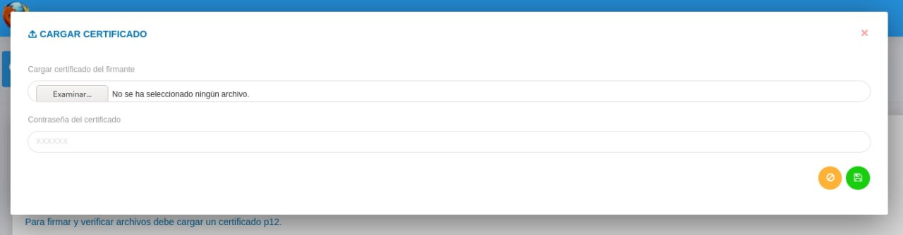
Una vez que se ha cargado un certificado .p12 en el sistema, la pantalla muestra los datos del certificado y ofrece la posibilidad de Actualizar, Eliminar y Ver información del certificado.
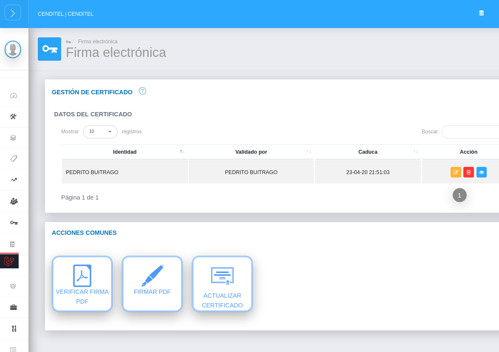
Actualizar certificado
Al usar el botón Actualizar, se muestra una ventana emergente que permite cargar un nuevo certificado .p12.
- Presionar el botón Examinar y buscar el certificado en el equipo.
- Transcribir la contraseña del certificado y presionar Subir certificado.
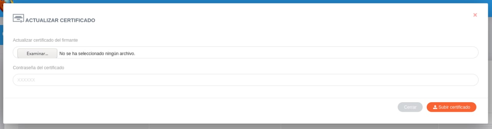
Eliminar certificado
Al usar el botón Eliminar, aparece un cuadro para eliminar el certificado .p12.
- Si se desea eliminar el certificado, presionar el botón Confirmar. De lo contrario, presionar Cerrar.
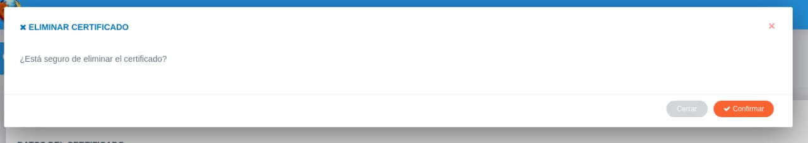
Ver más información
Al usar el botón Ver más información, aparece un cuadro que muestra datos relevantes del certificado .p12. Para salir de este cuadro, presionar Cerrar.
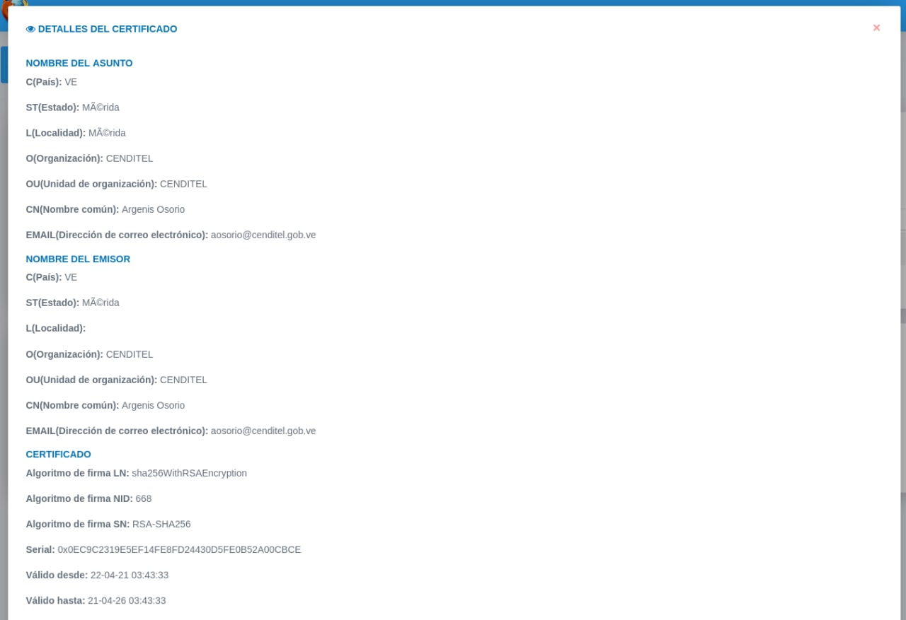
Acciones comunes
Verificar Documento PDF
La función de Verificar Documento PDF permite examinar la validez del certificado de un documento firmado electrónicamente.
- Presionar el botón Verificar Firma PDF.
- Buscar en el equipo el archivo PDF que se desea examinar.
- Presionar Verificar.
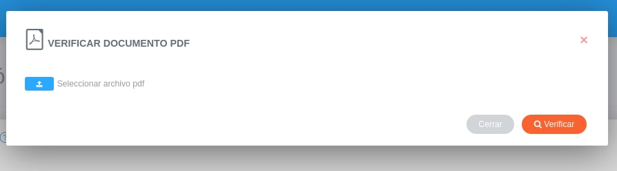
Una vez seleccionado el certificado, la ventana se actualiza con datos que validan la autenticidad de la firma electrónica en el documento PDF.
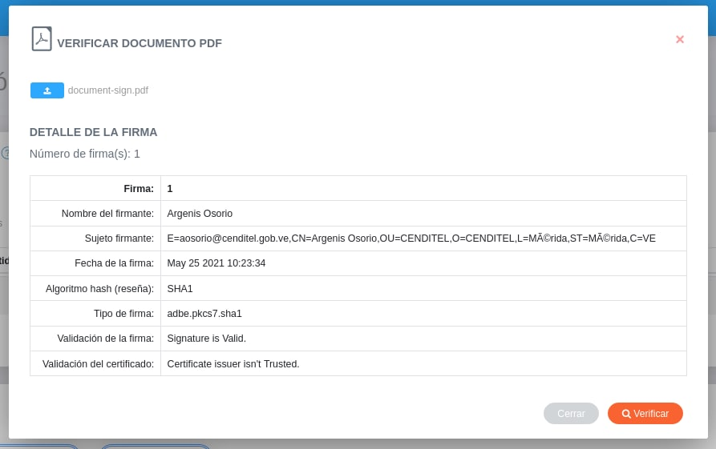
Firmar Documento PDF
La función de Firmar PDF permite integrar el certificado .p12 en un documento PDF para establecer la validez del mismo.
- Presionar el botón Firmar.
- Buscar en el equipo el archivo PDF que se desea firmar.
- Presionar Firmar.
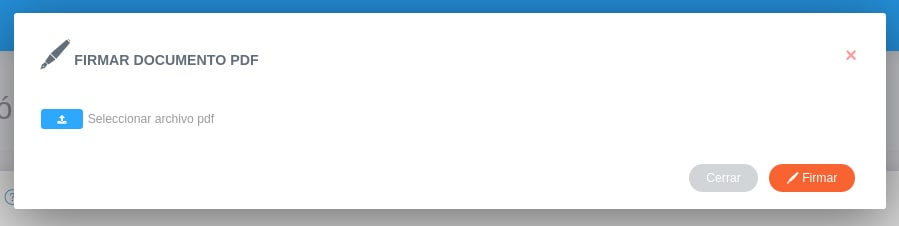
Una vez firmado el documento, la ventana se actualiza con datos que confirman el proceso de firma y un enlace para descargar el documento firmado electrónicamente.
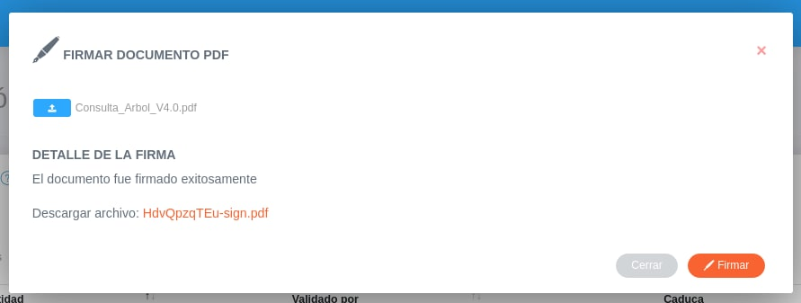
Actualizar certificado
Al usar el botón Actualizar certificado, aparece un cuadro que permite cargar un nuevo certificado .p12. El procedimiento es el mismo que en la sección Gestión de Certificado.
- Presionar el botón Examinar y buscar el certificado en el equipo.
- Transcribir la contraseña del certificado y presionar Subir certificado.